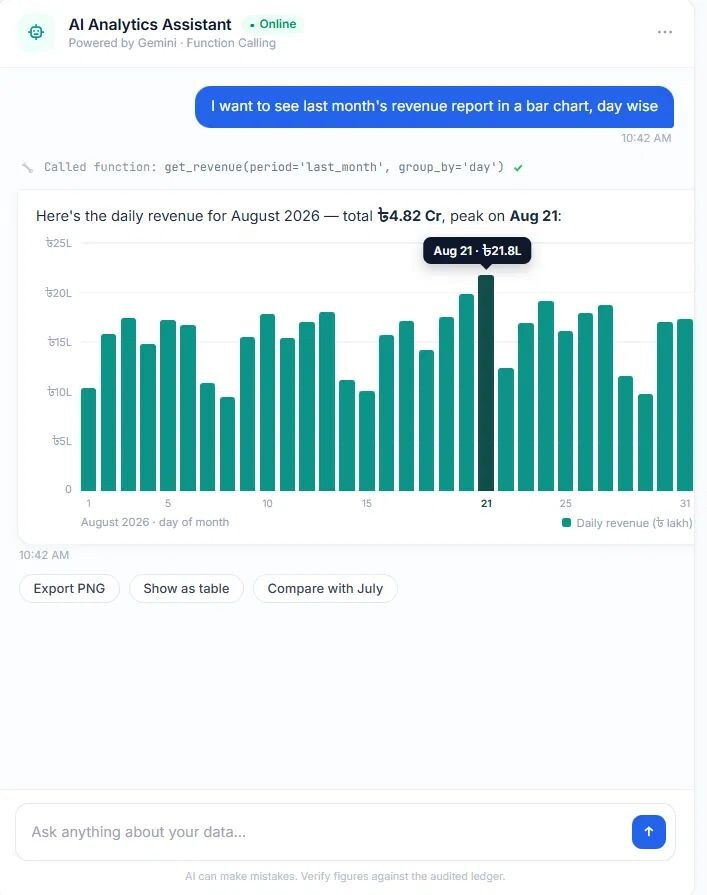

Demo dataAI Padakhep · 2026
AI Analytics Chatbot
Anyone in the organisation can ask for a report in plain English and get the chart back in seconds, with no SQL.
Read the full story
- Problem
- Every new chart meant a request to the data team and a wait.
- What I built
- A Gemini-powered assistant inside the reporting dashboard. It uses function calling and agentic workflows to pick the right function, query the live database and return the chart.
- Why it works
- The model never writes free-form SQL. It chooses from well-defined tools, which keeps answers accurate and safe.